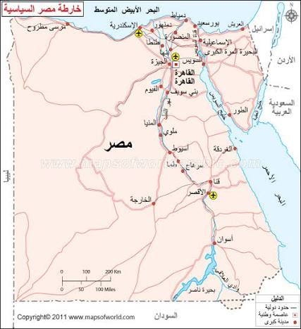
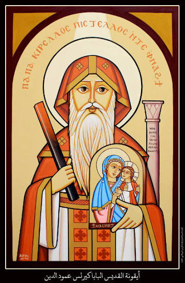
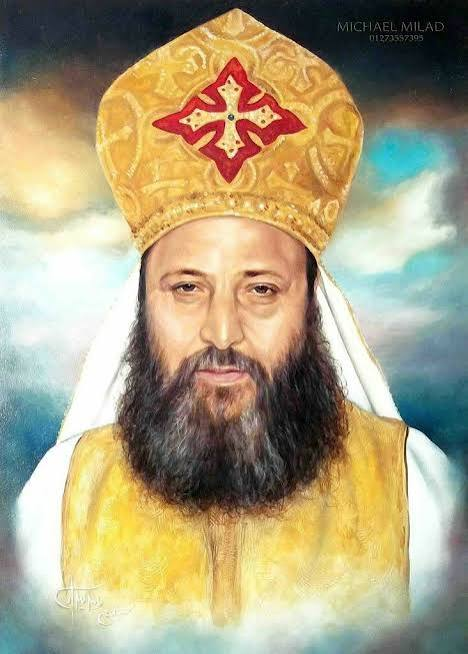

رحلة مع قديسين وجدوا مسرتهم في المسيح
اضغط على أي صورة لمعرفة السيرة الكاملة وكيف وجد مسرته في المسيح.




يسلط هذا الموقع الضوء على ثلاثة من الشخصيات المؤثرة في تاريخ الكنيسة القبطية الأرثوذكسية، وكيف وجد كل منهم مسرته الحقيقية في المسيح. ندعوك لاكتشاف سيرتهم والتعلم من حياتهم، حتى نجد نحن أيضًا مسرتنا في الرب.
اضغط على أي صورة لمعرفة السيرة الكاملة وكيف وجد مسرته في المسيح.



ولد القديس الأنبا أنطونيوس سنة 251م في بلدة قمن العروس بمحافظة بني سويف، من أسرة غنية ومحبة لله. وبعد نياحة والديه سمع في الكنيسة قول السيد المسيح: "إن أردت أن تكون كاملاً فاذهب وبع كل مالك وأعط الفقراء..." فنفذ الوصية، ووزع أمواله على الفقراء، وترك العالم كله ليعيش مع الله في البرية.
وجد الأنبا أنطونيوس مسرته في حياة الصلاة والصمت والتأمل، وكان يعتبر أن أعظم فرح هو الوجود الدائم مع المسيح. فعاش أكثر من ثمانين عامًا في البرية يصلي ويجاهد حتى صار مثالًا للرهبنة في العالم كله.
"من يعرف نفسه يعرف الله."
أن السعادة الحقيقية ليست في المال أو الممتلكات، بل في الحياة مع المسيح والصلاة والاتكال عليه.
نخصص وقتًا يوميًا للصلاة والحديث مع الله.
نقرأ الإنجيل ونتأمل في كلمة الله كل يوم.
نثبت في الاعتراف والتناول وحضور القداسات.
نخدم الآخرين بمحبة كما فعل القديسون.
نجدد توبتنا باستمرار ونرجع إلى الله.
نعيش بالمحبة والشكر في كل الظروف، فنختبر فرح المسيح.
كما وجد الأنبا أنطونيوس مسرته في حياة التكريس، ووجد البابا كيرلس الأول عمود الدين مسرته في الدفاع عن الإيمان، ووجد القمص بيشوي كامل مسرته في الخدمة، فنحن أيضًا نستطيع أن نجد مسرتنا في المسيح بالصلاة والإنجيل والأسرار والخدمة والمحبة.